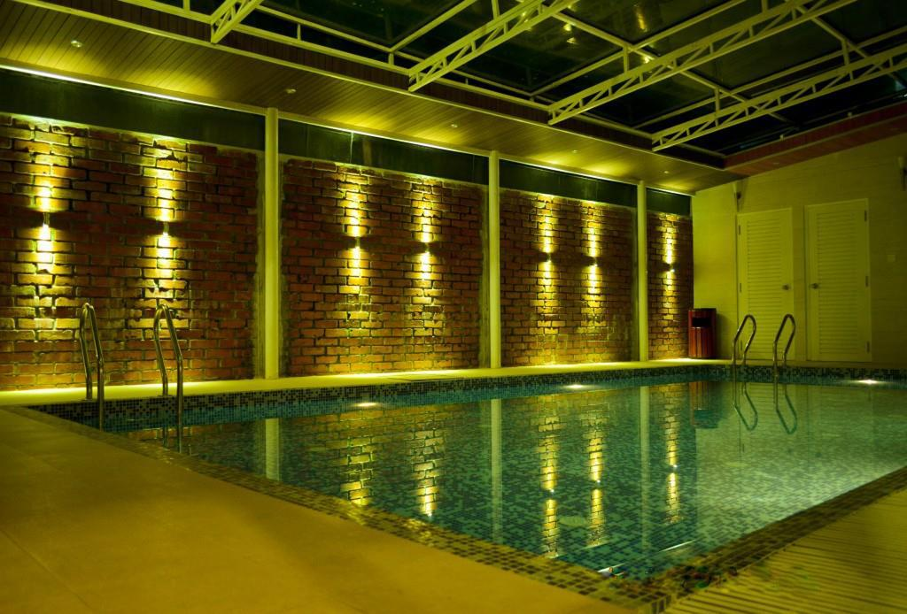
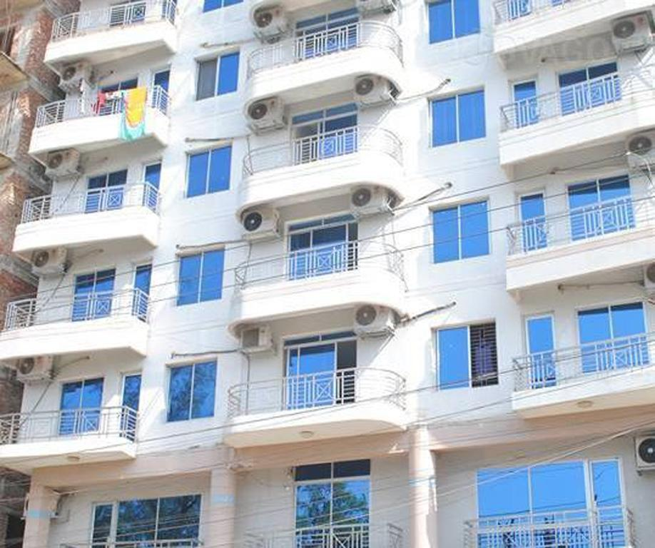
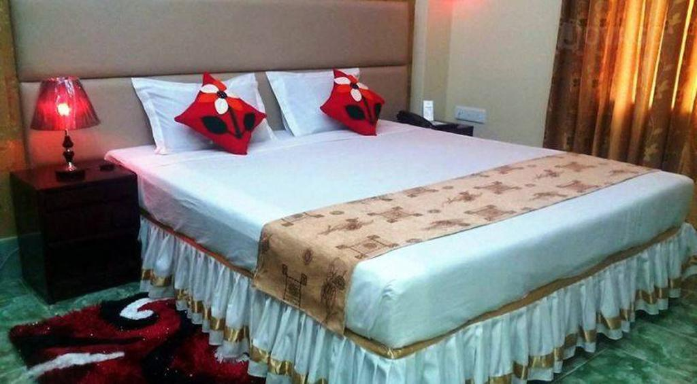

Aristos Boutique Hotel
Featuring free WiFi and a restaurant, Aristos Boutique Hotel offers accommodations in Chittagong. Free private parking is available on site.
Each room is equipped with a flat-screen TV with satellite channels. Some accommodations have a sitting area where you can relax. You will find a kettle in the room. Every room comes with a private bathroom fitted with a bathtub. For your comfort, you will find bathrobes and slippers.
You will find a 24-hour front desk at the property.

Hotel Alif
Featuring free WiFi and a restaurant, Hotel Sea Alif offers accommodations in Shitakundu. Free private parking is available on site.
Each room comes with a TV with cable channels. Views of the sea, mountains or city are featured in certain rooms. Every room includes a private bathroom fitted with a shower. For your comfort, you will find slippers and free toiletries.
There is a 24-hour front desk and shops at the property.
We speak your language!

The Peninsula Chittagong Limited
33.6km of Sitakunda.
The Peninsula Chittagong Limited is a 4-star property in Port City's upscale GEC Circle,
a short 5-minute walk from Central Plaza shopping area. An outdoor pool, pampering spa
treatments and a well-equipped fitness centre are available.